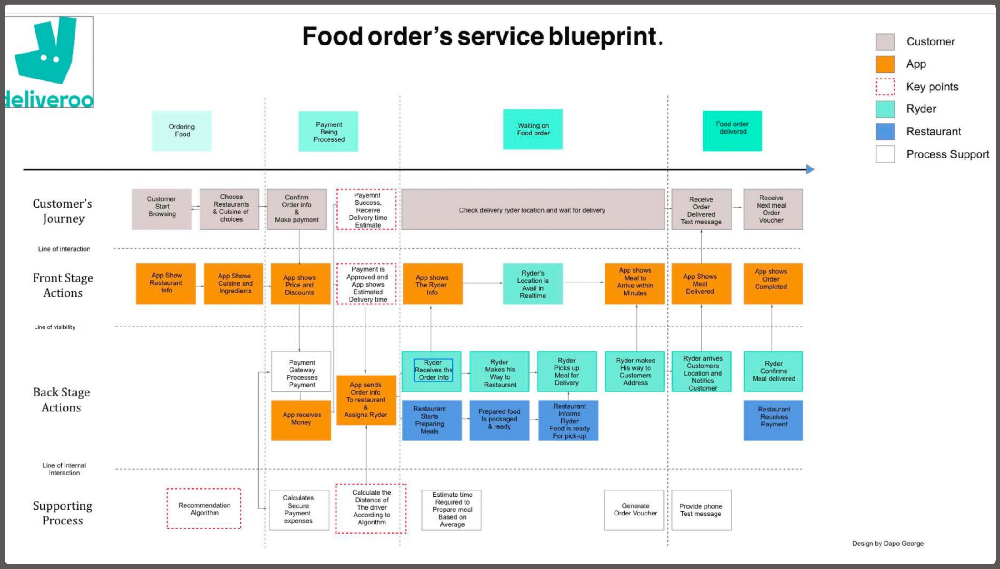

I move between two scales of design. Up close, a UX/UI process built around cognitive load, separating what a user must do from what they might reference. Pulled back, a research-led service design process that maps the whole ecosystem of people and systems behind a single action.
How I take a single, dense screen and make the right thing obvious, from audit to shipped configuration.
I start by mapping what users actually need against what the interface puts in front of them, and finding where the gap lives.
I translate findings into a clear priority: immediate action first, historical detail second, deep-dive data one click away.
I structure the page around how the eye actually moves and how attention is best spent.
Design isn’t just visuals; it’s configuration. I build the solution natively in the platform so it ships.
I confirm the design holds up across devices and genuinely lowers the effort of the task.
When the problem is bigger than one screen, I zoom out. This is how I research the people in a system, map how a single action ripples across them, and design the invisible chain that makes the experience work, from the Deliveroo blueprint to the remittance research behind Moyo.Exchange.
Every service starts with research. I combine qualitative insight with hard secondary data to understand every actor in the system before drawing a single screen.
I visualise how one simple action triggers a complex chain of backstage events across people and systems.

The hinge of any service: what the user sees, versus the human and third-party work that makes it happen.
I design the moments where automated systems and human actions must stay in lock-step.
A blueprint earns its keep when it reveals friction you can measure, and remove.
Fewer decisions per screen. Surface the relevant, defer the rest.
“What do I do next?” leads “what are the details?”
Low-frequency data stays one click away, never in the way.
One responsive system, the same truth on every device.
Design the back-stage chain, not just the screen the user touches.
Research and data set the brief before a pixel is drawn.